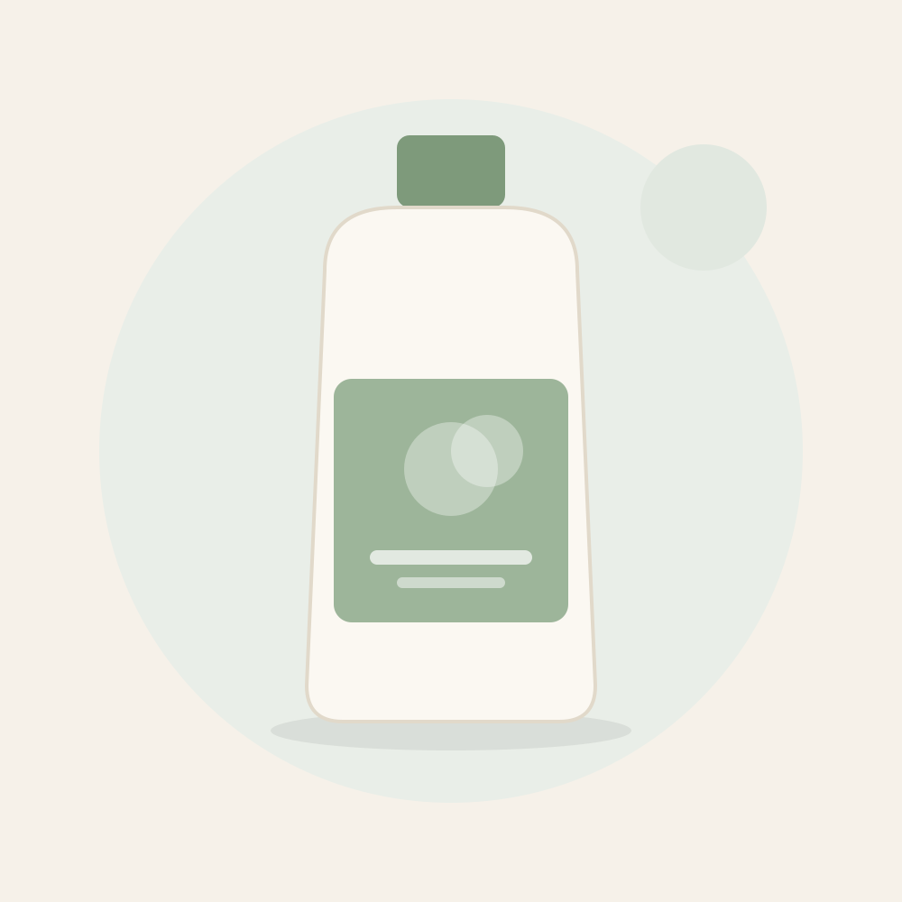

Couche hybride
Couche lavable hybride Washie Classic
La couche lavable aussi simple qu'une jetable : une culotte douce avec poche étanche intégrée, on glisse l'absorbant, on ferme, c'est prêt.
32,00 €XS · S · M · L · XL
8,90 €
Un supplément fin à glisser sous l'absorbant pour gagner 1 à 2 h, la nuit ou chez la nounou.
Ajouté au panier · Voir le panier
Booster fin en microfibre 2 épaisseurs, à placer sous l'absorbant principal pour gagner 1 à 2 heures d'autonomie. Idéal pour la nuit, les longs trajets ou les journées chez l'assistante maternelle. Compatible toutes tailles. Lot de 2.
Lavage jusqu'à 60 °C. Séchage à l'air libre ou sèche-linge basse température. Prélavez les absorbants neufs avant la première utilisation.
| Type | Booster |
|---|---|
| Matière | Microfibre, 2 épaisseurs |
| Dimensions | 28 × 10 cm |
| Contenu | Lot de 2 |
| Lavage | 60 °C |
| Marque | Washie |
Stockez les couches au sec dans un sac ou un bac aéré, sans les faire tremper. Lavez la culotte et la poche à 40 °C, rabats fermés, et les absorbants jusqu'à 60 °C. N'utilisez ni adoucissant, ni javel, ni lessive avec agent de blanchiment ou azurant optique, qui abîment l'étanchéité. Séchez à l'air libre, sans sèche-linge ni fer à repasser pour les culottes et poches.
La couche lavable aussi simple qu'une jetable : une culotte douce avec poche étanche intégrée, on glisse l'absorbant, on ferme, c'est prêt.

Une culotte pour 2 à 3 changes : seule la poche étanche détachable se remplace. Moins de linge, séchage express.

Sans agent de blanchiment, azurant optique ni adoucissant : préserve l'étanchéité des poches et l'absorption.